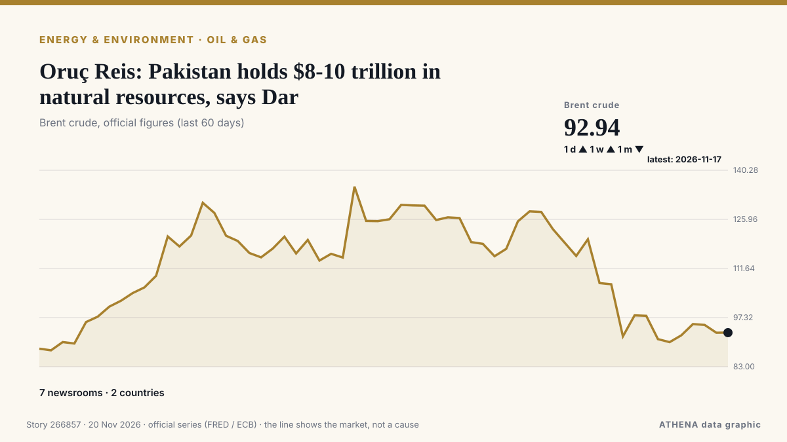

Energy, Resources & Environment
SponsoredPresented by  Cybernetics and Artificial Intelligence Lab Welcome to the Cybernetics and Artificial Intelligence Laboratory, established at the Department of Business Administration of the National and Kapodistrian University of Athens. The lab is headed by Professor Dimitrios Thomakos. The lab aims to do research that can be published in top venues. Our research uses tools and methods of Artificial Intelligence, and lies in the following areas: - Forecasting - Decision making - Cyber security - Finance We are always looking forward to collaborating with exceptional students!
Cybernetics and Artificial Intelligence Lab Welcome to the Cybernetics and Artificial Intelligence Laboratory, established at the Department of Business Administration of the National and Kapodistrian University of Athens. The lab is headed by Professor Dimitrios Thomakos. The lab aims to do research that can be published in top venues. Our research uses tools and methods of Artificial Intelligence, and lies in the following areas: - Forecasting - Decision making - Cyber security - Finance We are always looking forward to collaborating with exceptional students!

Oil & gasOruç Reis: Pakistan holds $8-10 trillion in natural resources, says Dar
Pakistan, sitting on natural resources estimated to be worth $8-10 trillion, took a major step on Friday to unlock its offshore energy wealth as the Turkish seismic vessel Oruç Reis arrived at… from Business Recorder
| 7 Nov | 47 |
|---|---|
| 8 Nov | 55 |
| 9 Nov | 110 |
| 10 Nov | 110 |
| 11 Nov | 115 |
| 12 Nov | 90 |
| 13 Nov | 74 |
| 14 Nov | 41 |
| 15 Nov | 50 |
| 16 Nov | 107 |
| 17 Nov | 86 |
| 18 Nov | 83 |
| 19 Nov | 70 |
| 20 Nov | 9 |
COP31 draft climate deal removes mention of fossil fuels
A new draft agreement for COP31 has been released by co-host Australia, omitting references to fossil fuels. from Arab News
Xi wants stronger bonds with Australia as Albanese defends Putin rebuke
“I made very clear to President Putin directly yesterday that he needs to stop his war, and he needs to stop it now,” Albanese said. from Sydney Morning Herald
Ibaizabal, TotalEnergies name LNG bunkering vessel in China
Spanish shipowner Ibaizabal and French energy giant TotalEnergies have named the first of two 18,600-cbm LNG bunkering vessels at China's Hudong-Zhonghua. from LNG Prime
Cyclone Akvan LIVE: Storm likely to make landfall near Odisha's Gopalpur tomorrow; 3 Andhra districts on red alert
Cyclone Akvan LIVE: Severe cyclonic storm Akvan is likely to move north-northwestward and cross north Andhra Pradesh and Yanam and south Odisha coasts between Narsapur-Puri, close to east of… from Hindustan Times
Nepal flood victims' families may wait up to a year for death certificates
KUALA LUMPUR: Families of Malaysians missing in the Nepal floods could face another three to 12 months, or longer, to obtain certificates of presumption of death, Malaysia Solidarity Families in Hope… from New Straits Times
US-led consortium wins Kenya’s Mrima Hill mineral tender
Frontier Minerals Consortium, Fangda Special Steel and Sinohydro selected for strategic mineral projects in Kwale, Samburu and Tharaka Nithi. from Capital FM Kenya
US sells first deep-sea mining leases off American Samoa, days after court ruled against process
The Trump administration pressed ahead with the auction despite a federal judge’s finding that regulators broke wildlife protection law and conservation groups vowed to have the leases voided. from Euronews English
Survivors of Uganda's deadly landslide seek justice at the UN
Survivors reject relocation plans they say ignore their safety, land rights and livelihoods. from BBC News
PACNEWS THREE, 20 NOVEMBER 2026
In this bulletin: 1. PACIFIC — Australia urges COP31 to keep 1.5°C target alive as negotiations enter final stage2. from Islands Business (Fiji)
Everllence secures first order for methane dual-fuel 8S50ME-GI Mk10.7 engine
Everllence has announced it has won the first order for its methane dual-fuel, two-stroke 8S50ME-GI Mk10.7 engine configuration. from Bunkerspot
Jotun to supply coatings for Knutsen’s LNG carrier series
Norway-based Jotun has been selected to supply marine coatings for a series of nine new LNG carriers for Knutsen. from Bunkerspot
Weatherford wins Constellation deepwater MPD contract in Brazil
Constellation has awarded Weatherford a deepwater managed pressure drilling contract for a frontier exploration campaign offshore Brazil using the Amaralina Star drillship, Weatherford’s second… from World Oil
Residents bracing for toxic dust cloud as Army detonates 5 tons of bomb-making chemicals in Iowa
Some schools in the path of the plume have canceled classes and residents have been urged to leave their homes. from The Independent
Countries air grievances in search of COP31 climate deal
Fault lines widen as COP31 struggles for climate deal. from Gulf News
Heavy rain hits Ras Al Khaimah and Fujairah as UAE issues weather alerts
Downpours across northern and eastern regions prompt flash flood warnings. from News of Bahrain
EnQuest Sells UK North Sea Assets to NEO NEXT+ in $960M Deal
EnQuest has agreed to sell its UK upstream oil and gas business and associated infrastructure to NEO NEXT+ for up to $960 million, marking a major step in its strategic shift towards Southeast Asia… from Offshore Engineer
EU agrees to delay methane rules for energy importers by two years
Compromise postpones key emissions monitoring and reporting obligations until 2029 and 2030 amid concerns over energy security, supply pressures and fuel prices. from TRT World
The Middle East War Has Wiped 2.8 Billion Barrels Off Global Oil Supply
The war in the Middle East has caused global oil supply losses of a total of 2.8 billion barrels plus 60 billion cubic meters of natural gas, the International Energy Agency estimated in its latest… from OilPrice.com
West presses Iran at IAEA to let inspections resume at bombed nuclear sites
VIENNA, Nov 19 - The United States, Britain, France and Germany jointly pressed Tehran at a meeting of the UN atomic watchdog's board on Thursday to let inspectors return to its nuclear sites bombed… from The Straits Times
Fiji Declares State Of Disaster Amid El Nino-Driven Drought
The government has redeployed 20 million Fiji dollars (US$8.5 million) from existing funds to ensure emergency water supplies for families and farmers. from Free Malaysia Today
Global solar PV additions to fall in 2026 for first time since 2018, forecasts GlobalData
Solar PV remained the world’s fastest-growing source of power in 2025, with record annual additions rising 17.5% year-on-year. from Cyprus Shipping News
North Korea expanding original uranium enrichment facility, UN nuclear watchdog says
The IAEA has not had access to Yongbyon or other locations in North Korea since the country kicked out the agency’s inspectors in 2009. from Euronews English
HD Hyundai Heavy wins $203.6 mil. order for 4 LPG carriers
HD Hyundai Heavy Industries said Monday it has secured a 272.1 billion-won ($203.6 million) contract to build four liquefied petroleum gas (LPG) carriers. from The Korea Times
ExxonMobil begins oil production at Uaru in Guyana’s Stabroek block
ExxonMobil, via its subsidiary ExxonMobil Guyana, has commenced oil production at Uaru, the fifth development in Guyana’s offshore Stabroek block. from Offshore Technology
Florence Pugh ‘disturbed’ as she responds to ‘stressful’ comments on appearance
The comments were sparked after images of the actress at the Governors Awards went viral. from Evening Standard (London)
IAEA chief says planned US-Saudi nuclear deal 'very satisfactory' on inspections
VIENNA: The provisions in a planned US-Saudi nuclear deal for inspections in Saudi Arabia are “very satisfactory” even though they do not include the gold-standard Additional Protocol, the UN nuclear… from Business Recorder
AngloGold Ashanti to invest about $2.5bn in Colombia copper mine
South African miner AngloGold Ashanti (AU.N) plans to invest about $2.5 billion in a copper mine in Colombia, conditional on environmental permits, its corporate affairs manager Stewart Bailey… from MyJoyOnline
Liberia Calls for Stronger Climate Support in Meeting with UN Secretary-General at COP31
ANTALYA, Türkiye – Liberia has called for stronger international support to protect its forests and vulnerable coastal communities, warning that countries contributing little to climate change should… from FrontPage Africa
Winter energy bill misery on way as price cap set to jump by 26% in January
Experts at Cornwall Insight have predicted Ofgem’s energy price cap will rise by 26% to £2,166 a year on January 1. from The Irish News (Belfast)
Part of Kyiv’s Livoberezhnyi district to temporarily lose heating
Some buildings in Kyiv’s Livoberezhnyi residential district will temporarily be left without heating due to repair work. from Ukrinform (English)
IAEA working with Russia, Ukraine to stock Zaporozhye NPP with needed fuel
According to IAEA Director General Rafael Grossi, these measures are "essential to support key nuclear safety and security functions" from TASS (English)
Drones attack Afipsky and Ilsky oil refineries in Russia – media reports
On the night of Wednesday, November 18, drones attacked Russia’s Krasnodar region, targeting the Afipsky and Ilsky oil refineries. from Ukrinform (English)